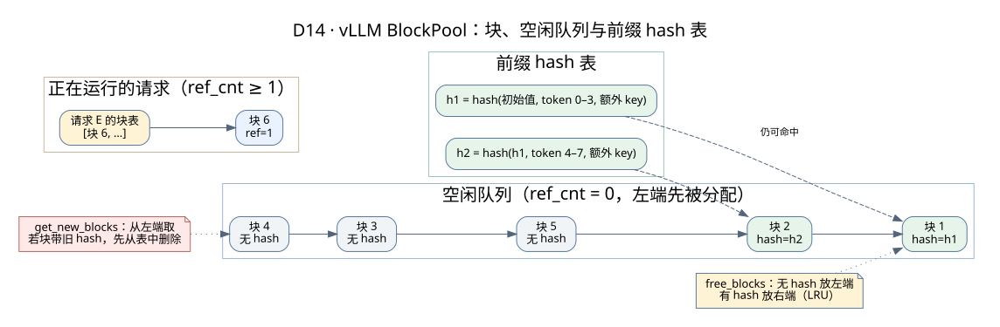

块管理器深入：BlockPool、前缀 hash 与淘汰顺序
KV 管理主题 · vLLM 外部 KV 接入 · vLLM 请求源码
前缀缓存“为什么能命中”“什么时候失效”“空闲的块为什么还能被命中”，答案都在 vLLM 的块管理器里。这一页把它拆开讲：数据结构、前缀 hash 怎么算、分配和释放的顺序、为什么这样设计，最后用一个可以一步步播放的例子把全过程串起来。源码对应 vLLM 学习版本（vllm/v1/core/block_pool.py、kv_cache_utils.py、kv_cache_manager.py）。
一句话结论：块的“空闲”和“缓存失效”是两回事。请求结束后，装满的块被放到空闲队列的末尾但仍留在 hash 表里，下一个相同前缀的请求可以直接捡回来；只有当这个块被重新分配给别人时，它的缓存才真正失效。
1. 三个核心数据结构

| 结构 | 里面有什么 | 作用 |
|---|---|---|
KVCacheBlock | block_id、ref_cnt（有几个请求在用）、block_hash（装满后才有） | 代表 GPU 上的一个物理块。ref_cnt 决定能不能被回收，block_hash 决定能不能被命中 |
空闲队列 free_block_queue | 所有 ref_cnt = 0 的块，按“先被拿走”的顺序排成双向链表 | 分配时从左端取；释放时按规则放到左端或右端。它同时就是 LRU 淘汰顺序 |
hash 表 cached_block_hash_to_block | 前缀 hash → 块 | 新请求按 hash 查找可复用的块。空闲队列里的块也可能还在表里 |
另外有一个特殊的 null_block（初始化时从队列取出的第一个块），用来占位不需要真实存储的位置（例如滑窗层窗口外的部分），它的引用计数不参与管理。
2. 前缀 hash 怎么算
每个装满的块算一个 hash，包含前一个块的 hash，形成一条链：
h1 = hash(初始值, 块 1 的 token, 额外 key)
h2 = hash(h1, 块 2 的 token, 额外 key)
h3 = hash(h2, 块 3 的 token, 额外 key)- 初始值（
NONE_HASH）由一个种子派生；多个进程要共享缓存时，必须用同一个种子。 - 额外 key 把会改变 KV 的因素也算进去：LoRA 名称、多模态内容的 hash、
cache_salt（只加在第一个块上，用来隔离租户）等。 - 因为有链，两个请求只要前面任何一个 token 不同，后面所有块的 hash 都不同——这正是“只能复用连续前缀”的来源。
- 只有装满的块才有 hash；最后那个没装满的块不登记，也就不能被别人命中。
还有一个细节：即使整个 prompt 都命中，vLLM 也最多复用到“长度减 1”。因为生成第一个输出 token 需要最后一个位置的 logits，至少要算最后一个 token。
3. 分配、释放与命中
| 操作 | 函数 | 做了什么 |
|---|---|---|
| 分配新块 | get_new_blocks | 从空闲队列左端取块；如果这个块还带着旧 hash，先调用 _maybe_evict_cached_block 把它从 hash 表删掉（这才是真正的淘汰）；然后 ref_cnt = 1 |
| 命中复用 | touch | 如果块的 ref_cnt 是 0（在空闲队列里），先把它从队列中取出；然后 ref_cnt + 1。多个请求共享同一个物理块，不拷贝 |
| 登记缓存 | cache_full_blocks | 块装满后，给它设置 hash，加入 hash 表 |
| 释放 | free_blocks | 请求的块倒序传入，ref_cnt - 1；归零的块中，没有 hash 的放到左端（最先被复用），有 hash 的放到右端（最后被复用） |
3.1 为什么这样排顺序
- 没有 hash 的块放左端：它们不可能被命中，留着没用，优先拿去复用；源码注释也提到这样对 GPU 局部性更好。
- 有 hash 的块放右端：越晚被拿走，越有机会被后来的请求命中，相当于 LRU。
- 倒序释放：一个请求的后面几个块，比前面的块更难被别人共享（前缀越长越特殊）。倒序放入右端，后面的块排在更靠左的位置，会先被淘汰，开头那几个通用的块保留得更久。
4. 一步步看全过程
下面用 6 个块、每块 4 个 token 演示。点“下一步”或“自动播放”，也可以直接点下方说明跳到某一步。黄色框是这一步发生变化的块；绿色表示已登记 hash、可以被命中。
GPU 块（ref 计数）块1ref=0块2ref=0块3ref=0块4ref=0块5ref=0块6ref=0
空闲队列（左边先被拿走）123456
前缀 hash 表（空）
请求块表（无）
GPU 块（ref 计数）块1ref=1块2ref=1块3ref=1块4ref=0块5ref=0块6ref=0
空闲队列（左边先被拿走）456
前缀 hash 表（空）
请求块表A: [1, 2, 3]
GPU 块（ref 计数）块1ref=1块2ref=1块3ref=1块4ref=0块5ref=0块6ref=0
空闲队列（左边先被拿走）456
前缀 hash 表h1→块1 h2→块2
请求块表A: [1, 2, 3]
GPU 块（ref 计数）块1ref=2块2ref=2块3ref=1块4ref=1块5ref=0块6ref=0
空闲队列（左边先被拿走）56
前缀 hash 表h1→块1 h2→块2
请求块表A: [1, 2, 3] B: [1, 2, 4]
GPU 块（ref 计数）块1ref=1块2ref=1块3ref=0块4ref=1块5ref=0块6ref=0
空闲队列（左边先被拿走）356
前缀 hash 表h1→块1 h2→块2
请求块表B: [1, 2, 4]
GPU 块（ref 计数）块1ref=0块2ref=0块3ref=0块4ref=0块5ref=0块6ref=0
空闲队列（左边先被拿走）435621
前缀 hash 表h1→块1 h2→块2
请求块表（无）
GPU 块（ref 计数）块1ref=1块2ref=1块3ref=0块4ref=0块5ref=0块6ref=0
空闲队列（左边先被拿走）4356
前缀 hash 表h1→块1 h2→块2
请求块表C: [1, 2, …]
GPU 块（ref 计数）块1ref=1块2ref=1块3ref=1块4ref=1块5ref=1块6ref=1
空闲队列（左边先被拿走）（空）
前缀 hash 表（h1、h2 已被淘汰）
请求块表D: [4, 3, 5, 6, 2, 1]
- 初始状态：6 个 GPU 块都在空闲队列里，hash 表为空。每块放 4 个 token。
- 请求 A（10 个 token）到达，没有命中。get_new_blocks 从队列左端拿走块 1、2、3，ref 都变成 1。
- A 的 Prefill 完成。块 1、2 已经装满，cache_full_blocks 算出 h1 = hash(初始值, token 0–3)、h2 = hash(h1, token 4–7) 并登记到 hash 表；块 3 没满，不登记。
- 请求 B 的前 8 个 token 和 A 相同。查 hash 表命中 h1、h2，touch 让块 1、2 的 ref 变成 2（共享，不拷贝）；剩下的部分再分配新块 4。
- A 结束，按倒序释放 [3, 2, 1]。块 3 没有 hash，ref 归零后放到队列最左边（最先被复用）；块 1、2 还被 B 用着，ref 只减到 1。
- B 结束，按倒序释放 [4, 2, 1]。块 4 没有 hash，放到最左边；块 2、1 有 hash，ref 归零后放到队列最右边——它们仍留在 hash 表里，随时可能被命中。
- 请求 C 带着同样的前缀到达。hash 表命中块 1、2，虽然它们在空闲队列里，touch 会把它们从队列中取出、ref 变回 1——这就是“空闲但仍可命中”的前缀缓存。
- 换一种情况：如果没有 C，而是显存紧张、不断有新请求分配块。队列从左往右被拿走，块 2、1 最后才轮到；被拿走时 _maybe_evict_cached_block 把它们从 hash 表删掉，前缀缓存才真正失效。
5. 和外部缓存怎样衔接
接入 LMCache、Mooncake 等外部缓存时，调度器的顺序是：
- 先用本地 hash 表找出 GPU 上已经命中的块（
get_computed_blocks）。 - 再问 KV Connector：“在本地命中之后，外部还能再提供多少 token？”（
get_num_new_matched_tokens）。 - 为外部命中的部分分配新的 GPU 块，worker 把数据加载进去；加载完成之前，这些块不能被注意力计算使用。
- 请求结束或块装满时，Connector 可以把新产生的 KV 保存出去。
所以外部缓存只补“本地没命中的那一段”。实验时要分开统计本地命中和外部命中，否则会把 APC 的收益算到外部缓存头上。详见vLLM 外部 KV 接入。
6. 常见问题
| 问题 | 回答 |
|---|---|
| 请求结束后显存为什么没降？ | 装满的块仍留在 hash 表里等待复用，看起来“占着”，但它们都在空闲队列里，随时可以分配给新请求，并不影响容量 |
| 两个请求共享块，一个被抢占会怎样？ | 抢占只减少这个请求的引用；另一个请求还在用，块不会被回收 |
| 命中率很高，为什么 TTFT 没降？ | 可能命中的是很短的前缀，或者命中的块很快被高并发挤出队列；也要看调度和排队是否才是瓶颈 |
| 能不能写一个块已经被共享的块？ | 不能。只有 ref_cnt = 1 且还没登记 hash 的块才可以修改（is_block_writable），否则会破坏别人的数据 |
| 多个进程能共享 GPU 前缀缓存吗？ | GPU 块只属于一个引擎进程。跨进程、跨机器复用要靠外部缓存，而且各方的 hash 种子、额外 key 和布局必须一致 |